1. Saint John's: Pour se rendre à Saint John's est difficile d'accès, si situe sur l'ile de Terre-Neuve. En arrivant, nous voyons des superbes maisons colorées entre la mer et les falaisesparsemées d'arbres.
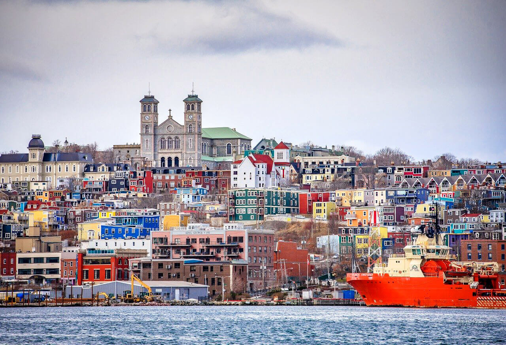2. Les chutes du Niagara: Les chutes du niagara se situe à Ontario, d'une puissance incroyable vous laissera bouche bée. Pour apprécier encore plus de la force de l'eau, montrez dans un bateau et laissez la cascade vous éclabousser.
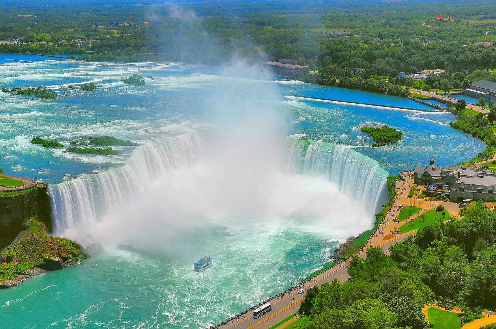3. Le lac Moraine: Préparez-vous à en prendre plein les yeux autour de ce lac absolument grandiose. Les sommets enneigés, les sapins verts, les glaciers, tout y est ! Quoi de plus apaisant que de marcher de longues heures dans un cadre naturel aussi pur et empli de sérénité ?.
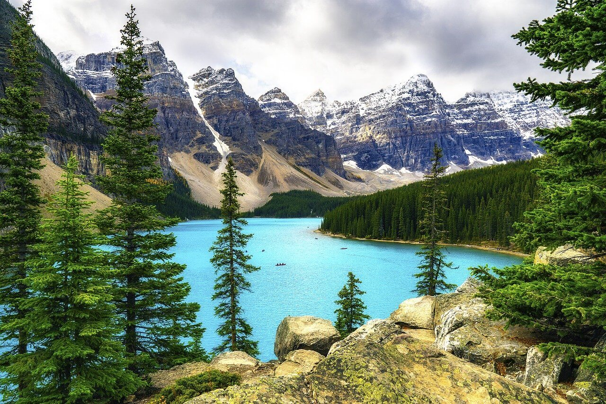1. La Poutine: La poutine est un plat incontournable québecois, ce plat fait frémir d'envie certains quand d'autres ne peuvent même plus ne serait-ce qu'entendre son nom. Ce met québecois se compose de frites maison et de chedar frais en grains, le tout recouvert d'une sauce brune. De nombreuse variantes vous sont proposées dans les restaurants , mais la plus classique est celle avec de la viande hachée.
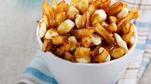2. Les bonbons patate: Il ne s'agit pas vraiment de sucreries mais plûtot de gateaux préparés à base de pomme de terre et ressemblant à des roulés à l'orange.
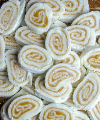3. La tourtière: aussi appélée "tarte à la viande", ce plat de traditionnel est généralement servi à l'occasion des fêtes de fin d'année. Les recettes peuvent varier légèrement selon les familles mais il s'agit d'une tarte salée garnie principalement de viande hachée agrémentée de pommes de terre, d'oignons, d'ail et d'autres ingrédients.
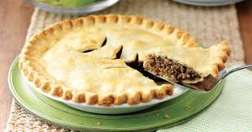1. Basilique Notre-Dame de Montréal: Située dans le quartier historique de Montréal, est l'église-mère de Montréal. La plus vaste de l'archidiocèse de Montréal et la deuxieme plus grande église catholique au Canada.

2. VIeux-Port de montréal: Un lieu extraordinaire à découvrir absolument, un train touristique gratuit nous promène environ 1/2h pour le tour des parcs et pavillons de pays de l'exposition universelle de 1967. Le musée de la biosphère, dans la grosse boule de l'ancien pavillon des Etats-Unis est très intéressant et la vue du haut panoramique.
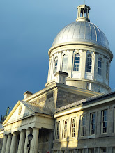3. Oratoire Saint-Joseph du Mont-Royal: L'oratoire Saint-Joseph du Mont-Royal, une église bâtie sur le versant du Mont-Royal, vaut bien un détour de par son architecture impressionnante. L'exterieur en style ressance italienne, intérieur moderne, elle semble émerger de la montage. La vue paronamique de Montréal est splendide
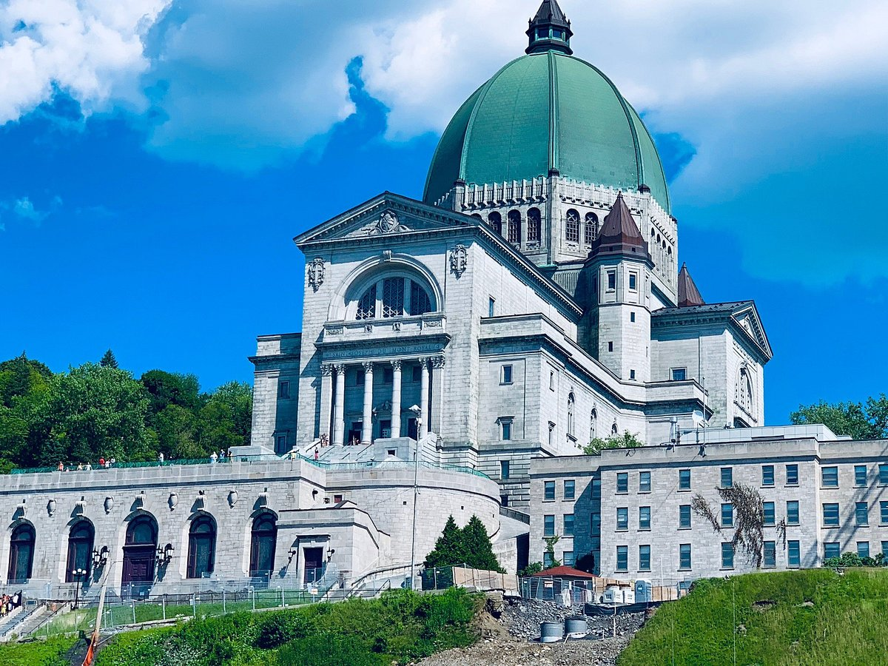1. Sir John Alexander Macdonald : Sir John Alexander Macdonald, premier ministre du Canada de 1867 à 1873 et de 1878 à 1891, avocat, homme d’affaires, politicien
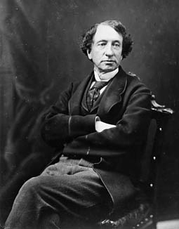2. Sir Louis-Hippolyte LaFontaine:Sir Louis-Hippolyte LaFontaine, ou La Fontaine, homme politique
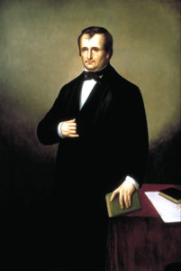3. Agnes Macphail: Agnes Macphail a été la première femme élue à la Chambre des communes (1921-1940) et elle a été l’une des deux premières femmes élues à l’Assemblée législative de l’Ontario (1943-1945, 1948-1951). Elle a également été la première femme membre de la délégation canadienne auprès de la Société des Nations. Agnes Macphail a été membre fondatrice de la Co-operative Commonwealth Federation (précurseur du Nouveau Parti démocratique). Elle était une pacifiste reconnue et une défenseure de la réforme des prisons. En tant que membre de la législature de l’Ontario, elle a défendu la première loi de l’Ontario sur la parité salariale (1951).
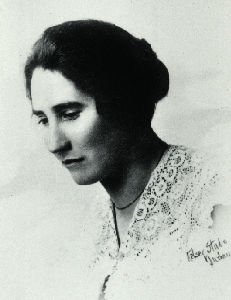1. Celine Dion: Céline Dion est l'une des chanteuse canadiennes les plus célébres de tout les temps.
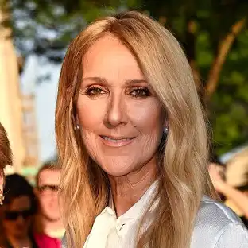2. Justin Bieber: Justin bieper est un chanteur canadien né en 1994 à london, en Ontario. Il a commencé sa carrière musicale en postant des vidéos de lui-même chantant sur youtube.
3. Leonard Cohen: Leonard cohen était un chanteur, auteur-compositeur et poète canadien. Née à MOntréal en 1934, Cohen a commencé sa carrière musicale dans les années 60. Il est surtout pour ses paroles poétiques et sa voix grave et mélancolique.
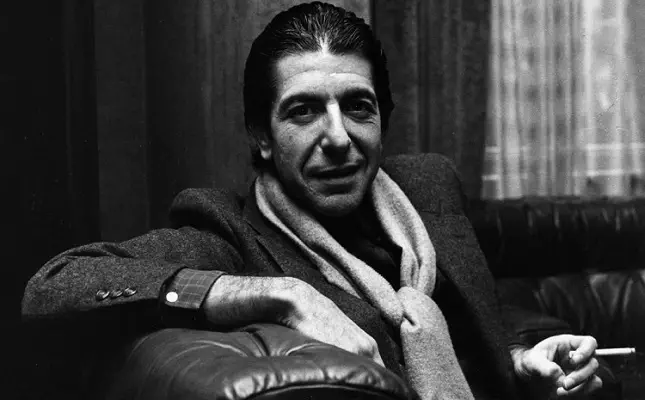1. Donovan Bailey : Donovan Bailey est un sprinter canadien spécialiste du 100 m, champion olympique dans cette discipline en 1996 et champion du monde l'année précédente, en 1995. Il est l'ancien détenteur du record du monde du 100 mètres avec un temps de 9 s 84, établi lors de sa victoire en finale des Jeux olympiques de 1996 à Atlanta. Il détient par ailleurs le record du monde du 50 mètres en salle.
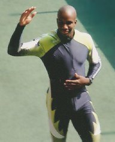2. Craig Forrest :Craig Forrest est un ancien joueur international canadien de soccer ayant évolué au poste de gardien de but. Il a dû se retirer du monde professionnel à cause d'un cancer testiculaire. Depuis ce retrait, il est devenu analyste sportif sur la chaîne de télévision canadienne Rogers Sportsnet.
.webp)
3. Paul Stalteri: Paul Stalteri est un joueur international canadien de soccer. Il réussit le doublé coupe-championnat avec le Werder Brême lors de la saison 2003-2004. Stalteri a aussi joué en Premier League pour les équipes de Tottenham hotspur et de Fulham FC.
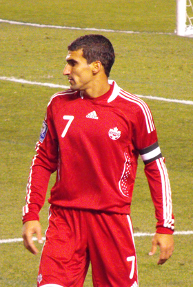1. Saul Bellow : est un écrivain canado-américain contemporain d'origine judéo-russe. Il reçut le prix international de littérature en 1965 et le prix Nobel de littérature en 1976
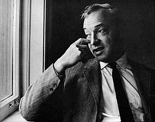2. Nicole Brossard :est une écrivaine, théoricienne et éditrice québécoise pratiquant principalement le genre poétique et romanesque. Cofondatrice de La Barre du jour, son implication dans le milieu littéraire est diverse. Sa carrière sera notamment marquée par son militantisme pour les causes féministe et LGBT+.
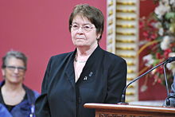3. Anne Hébert: est une écrivaine, poétesse, dramaturge et scénariste québécoise. Reconnue pour sa plume féministe, elle est l'autrice du recueil de nouvelles Le Torrent ainsi que des romans Kamouraska et Les Fous de Bassan, pour lesquels elle remporte de nombreux prix, dont le Prix du Gouverneur général et le Prix Femina.